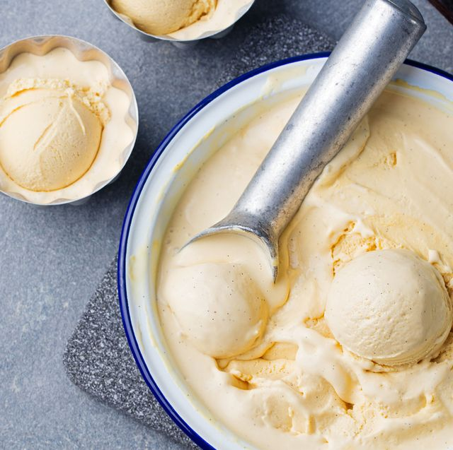

Homemade Vanilla Ice Cream

The History of Vanilla Ice Cream
Vanilla ice cream was first documented all the way back to the 1600's
used by a woman called Anne Fanshawe,
but was later introduced to the United States
by none other than
Thomas Jefferson. Thomas Jefferson had visited France and discovered vanilla.
He then brought the vanilla to the United States and created
vanilla ice cream!
Ingredients
- 2 cups heavy whipping cream
- 2 cups half-and-half cream
- 1 cup sugar
- 2 teaspoons vanilla extract
Steps
- Combine all ingredients, stirring to dissolve sugar completely.
Fill cylinder of ice cream maker no more than two-thirds full;
freeze according to manufacturer's directions.
(Refrigerate any remaining mixture until ready to freeze.)
Serve immediately or store in covered containers in freezer.